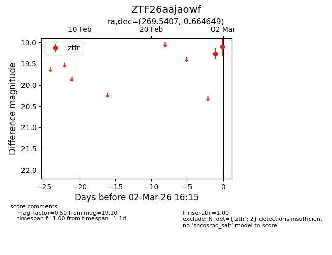
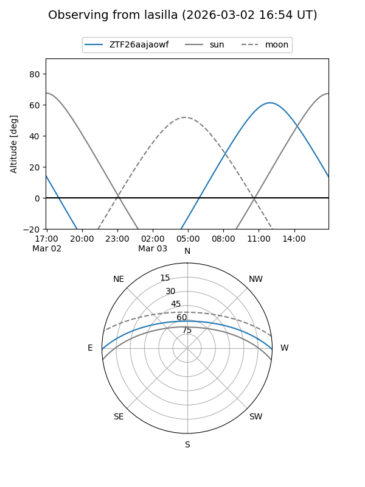
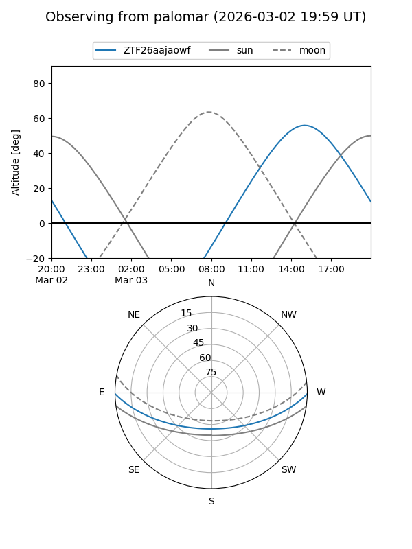

ZTF26aajaowf
Target ZTF26aajaowf at 2026-03-02 16:16
Aliases and brokers:
FINK: link
Lasair: link
ALeRCE: link
alt names
ZTF26aajaowf (ztf,fink_ztf)
Coordinates:
equatorial (ra, dec) = 269.5407,-0.66465
equatorial (HMS+DMS) = 17:58:09.76,-00:39:52.74
galactic (l, b) = (26.1706,+11.52075)
Flags:
Photometry:
last ztfr=19.10
2 ztfr detections
Lightcurve

Visibility


Additional plots